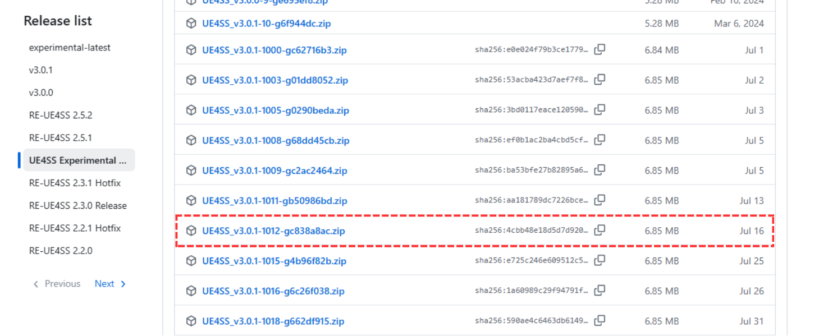
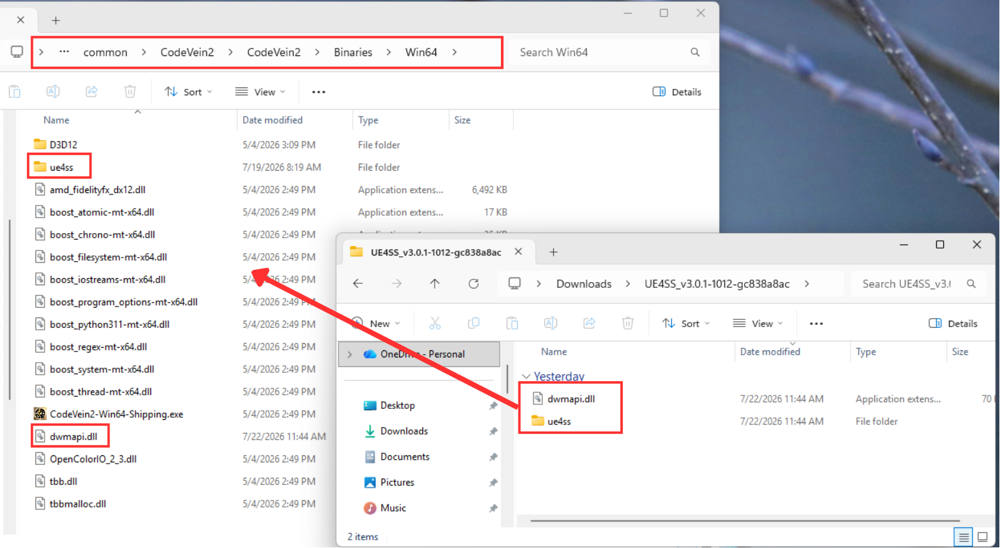
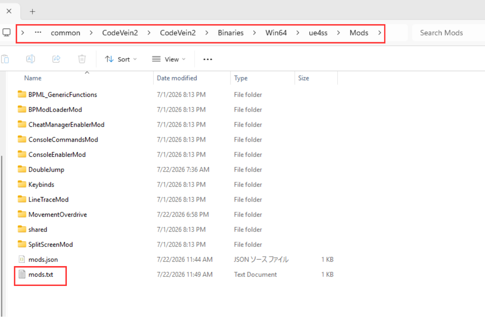
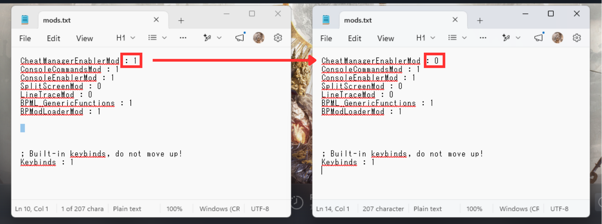

Check that the archive you installed was UE4SS_v3.0.1-1012-gc838a8ac.zip.
Some mods only run on this exact build, so a newer experimental build is not a safe substitute.

From the long list of assets, pick exactly UE4SS_v3.0.1-1012-gc838a8ac.zip.
Important: The Assets list contains hundreds of builds. Download that exact file — not a newer build, and not Source code (zip), which will not work.
3Are the UE4SS files in the right folder?
Both dwmapi.dll and the ue4ss folder must exist directly inside: <game folder>\CodeVein2\Binaries\Win64

dwmapi.dll and the ue4ss folder belong in CodeVein2\Binaries\Win64.
Important: They must not sit inside Binaries, inside the game's root folder, or nested inside each other. Copying to the wrong location is the most common cause of installation failure.
4Is CheatManagerEnablerMod set to 0?
Open the following file in Notepad or a similar text editor: <game folder>\CodeVein2\Binaries\Win64\ue4ss\Mods\mods.txt
Find the CheatManagerEnablerMod line and confirm it reads CheatManagerEnablerMod : 0. If it reads 1, change it to 0 and save the file.

mods.txt is located inside Win64\ue4ss\Mods.

Change only the value at the end of the CheatManagerEnablerMod line, from 1 to 0.
Tip: Only change the number at the end of the line. Do not delete the line or add stray whitespace, and save over mods.txt rather than saving as a new file.
5Does each mod have its own folder?
Every installed mod needs a folder named after that mod under: <game folder>\CodeVein2\Binaries\Win64\ue4ss\Mods
If a mod's folder is missing, that mod will not load. Open that mod's page on Nexus Mods, read its own installation guide (usually under the Description tab), and install the mod again following those instructions.
Still not working?
Go back to the installation guide and reinstall UE4SS from the beginning.